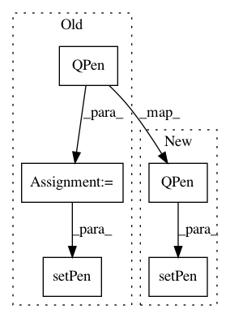

996a236104d2157c2e7314d745441d3e3fd429f9,Orange/canvas/canvas/items/linkitem.py,LinkCurveItem,__init__,#LinkCurveItem#Any#,27
Before Change
offset=QPointF(0, 0)
)
self.normalPen = QPen(QBrush(QColor("/ǟCACB4")), 2.0)
self.hoverPen = QPen(QBrush(QColor("/ǝD7D7D")), 2.1)
self.setPen(self.normalPen)
self.setGraphicsEffect(self.shadow)
self.shadow.setEnabled(False)
self.__hover = False
After Change
self.__curvepath = QPainterPath()
self.__curvepath_disabled = None
self.__pen = self.pen()
self.setPen(QPen(QBrush(QColor("/ǟCACB4")), 2.0))
def setCurvePath(self, path):
if path != self.__curvepath:
self.prepareGeometryChange()
In pattern: SUPERPATTERN
Frequency: 3
Non-data size: 5
Instances
Project Name: biolab/orange3
Commit Name: 996a236104d2157c2e7314d745441d3e3fd429f9
Time: 2016-09-19
Author: ales.erjavec@fri.uni-lj.si
File Name: Orange/canvas/canvas/items/linkitem.py
Class Name: LinkCurveItem
Method Name: __init__
Project Name: biolab/orange3
Commit Name: 4fd5d288433b377e815d8cb2d3c8ed6bcf1adedf
Time: 2015-05-19
Author: ales.erjavec@fri.uni-lj.si
File Name: Orange/widgets/unsupervised/owdistancemap.py
Class Name: DistanceMapItem
Method Name: __elastic_band_select
Project Name: biolab/orange3
Commit Name: 4fd5d288433b377e815d8cb2d3c8ed6bcf1adedf
Time: 2015-05-19
Author: ales.erjavec@fri.uni-lj.si
File Name: Orange/widgets/unsupervised/owdistancemap.py
Class Name: DistanceMapItem
Method Name: __select